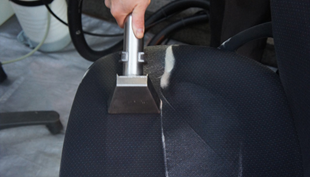

椅子ソファークリーニングは
あらゆる場所で活躍しています。

椅子のクリーニングは昭和50年代から日本で導入され始めたサービスです。もともとFurniture cleaningやInterior Cleaningと呼ばれアメリカでスタートしたものです。当地では大型のバンにスチーム洗浄機を取り付けて作業に訪問するスタイルが一般的です。日本でも80年台からインテリアクリーニング業界の一領域として普及しはじめ現在にいたっております。
椅子ソファークリーニングは
あらゆる場所で活躍しています。
椅子のクリーニングは昭和50年代から日本で導入され始めたサービスです。もともとFurniture cleaningやInterior Cleaningと呼ばれアメリカでスタートしたものです。当地では大型のバンにスチーム洗浄機を取り付けて作業に訪問するスタイルが一般的です。日本でも80年台からインテリアクリーニング業界の一領域として普及しはじめ現在にいたっております。
オフィス・事務所、病院、ショッピングセンター、学校、飲食店多くの施設で椅子ソファークリーニングを利用されています。タックでは多くの施設、事業者様での施工実績があります。